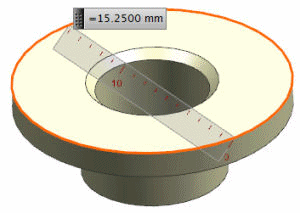
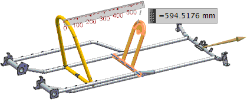

Measure Distance enhancements
What is it?
The Measure Distance dialog box has three new Type options.
-
The Diameter option measures the diameter of circular objects.

-
The Between Objects Sets option measures the distance between two sets of objects that you select using one or more selection intent rules.
The following example shows the maximum distance between the two object sets. The objects for the Start Objects and End Objects sets are selected with the Face Rule set to Single Face.

-
The Projected Distance between Objects Sets option measures the projected distance between two sets of objects that you select using one or more selection intent rules. The distance is projected along a selected vector.
The following example shows the maximum projected distance between the two object sets. The objects for the Start Objects and End Objects sets are selected with the Face Rule set to Single Face.

Where do I find it?
|
Toolbar |
Utility→Measure Distance |
|
Menu |
Analysis→Measure Distance |
|
Location in dialog box |
Type group→Measure Diameter or Between Component Sets or Projected Distance between Component Sets |